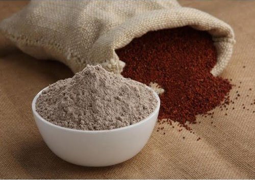

Sakkarai - Sugar Cane Jaggery (100% Organic) - Organic Nattu Sakkarai or Country Sugar
Price=65 RS/Kg
Nattu Sakkarai, also known as country sugar, is an organic form of white sugar. It does not contain any chemical additives. Unlike the processing of brown sugar in which the molasses are added/reintroduced to retain colour, nattu sakkarai is processed differently allowing it to retain its original, natural nutrients. The processing of Ecocare nattu sakkaria is chemical free, retain its nutrients and stays true to organic products, with the sugarcane it is sourced from being organic as well.This type of sugar is one of the best forms for consumption, a better and healthier substitute to white sugar. There are no negative effects to nattu sakkarai and you do not lose out on the taste that sugars should be.
Benefits
- Rich in iron and calcium
- Improves bone strength
- Reduces hair fall and prevent dandruff
- Prevents knee and joint pain
- Helps against diabetes
HILL BANANA (MAZHAI VAZHAI PAZHAM) - Price On Request
Hill Banana a variant of the banana has loads of nutrients packed in it that triggers your body to maintain excellent health. Farm Fresh bananas are made available for you at tredy foods for you to enjoy the ecstatic taste of this exotic fruit. Stash them onto your dining table and don't miss to take out a punch of nutrients from it.
Benefits
- High Fibre Content. Banana is loaded with fibre, both soluble and insoluble.
- Heart Health.
- Ease in Digestion.
- Powerhouse of Nutrients.
- High Source Of Potassium.
- Blood Pressure.
- Helps Fight Anaemia.
PURE RAGI FLOUR - Price on Request

Ragi is rich in calcium. Instead of popping a pill, you can as well substitute that with ragi kanji. Boil a glass of water, put a spoon of ragi flour into boiling water, add a little salt and let it cool. Drink it with a pinch of salt and butter milk. This will not just cool your body, but also gives you strength and cools your body.
Ragi is best for weight loss. Make ragi balls and substitute this for rice. You will soon notice the difference
FINANCIAL SOLUTION - Call me to choose your plan
1. Assessing financial situation
2. Knowing your risk appetite
3. Identifying Specific goals
4. Mapping investments to each goal
5. Securing your family's future
6. Monitoring the progress
Contact us
Karthik +91 8270970077
Gunasekaran +91 9791155291
Balakrishnan +91 9629602301
Manigandan +91 9487003024